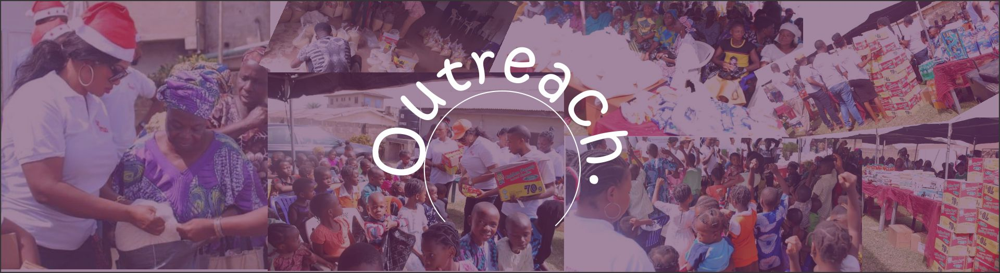

Dr. Victoria Michaels, a sought-after international speaker and empowerment specialist, is a visionary and mastermind who focuses on empowering individuals to walk in their destiny. Her profound approach reaches persons from various socio-economic backgrounds, races, nationalities and creed.
She is also a Pastor, wife, mother, mentor, entrepreneur, television host, author, fashion designer, song-writer, and teacher whose life is reaching many around the world both in the Christendom and the Market place.
Dr. Michaels obtained a Bachelors in Biblical Studies emphasis in Christian Counseling and she is currently pursuing her Masters in Christian Theology. She then earned a diploma in Practical Theology from the International Seminary in Florida, USA. She is also a Computer Network Specialist. She is the recipient of various awards such as an Honorary Doctorate in Divinity from St Thomas Christian University.
For the past 20 years, Dr. Michaels has helped countless of persons realize their destiny and purpose in life through her dynamic ministry. In December 2000, Dr. Victoria Michaels founded Glorious Ministries Worldwide which birthed Tabernacle of Praise a non-denominational, multicultural church and humanitarian organization in Baltimore, Maryland USA. Her mandate of God is to preach good tidings unto the meek, to bind up the broken hearted, to proclaim liberty to the captive and open the prison to them that are bound (Isaiah 61).
Dr. Victoria Michaels undoubtedly knows that God has anointed and called her to be an Apostolic and Prophetic Voice to the Nations where she is a voice of hope and power to today’s generation. As the host of Prophetic Voice Television Broadcast, in 2004, she made her first live broadcasting landmark with Baltimore Radio One where she shared the Word of God with her listeners, prayed and gave prophetic word as the Holy Spirit gave utterance. In 2008, she signed up with Streaming Faith, one of the world’s largest provider of Internet broadcast solutions to the faith-based community. Dr. Michaels messages was broadcasted in over 1 million viewers visiting StreamingFaith.com each month to receive encouragement and inspiration. Glorious Ministries Worldwide shared the stage with over 500 different ministries including Paula White Ministries, Pastor Jentezen Franklin, Joyce Meyers Ministry, Dr. Jamal Bryant and the late Dr. Myles Munroe.
In 2011, Dr. Victoria Michaels took the Gospel of our Lord and Savior Jesus Christ to the continent of Africa, Europe, Asia, the Middle East as well as the USA to 250 million homes in these continents and regions by satellite television broadcast through the WORD Network, Omega Channel, a South African based gospel television broadcast, WBFF-TV Fox 45 Baltimore and CW 20 Baltimore Maryland USA. Uncommon testimonies poured in as lives were touched and transformed through her teaching and preaching.
Dr. Victoria Michaels travels globally to Countries such as India, United Kingdom, Jamaica, Trinidad and Tobago, Togo, St. Vincent, St. Thomas V.I, Republic of Benin, Ethiopia, South America, Scotland and many more as well as cities and states in the United States.
Dr. Michaels faithfully serves the local and global community. She is a humanitarian and philanthropist, the founder of Impacting Lives One at a Time Outreach. Dr. Michaels compassion for the less privilege has given her favor in partnering with community leaders, businesses, religious leaders, and Charitable Non-Profit Organization such as World Vision, Goods 360, and Toys for Tot to address individual and social needs irrespective of their religion, background, race, or gender through various programs such as our annual Back to School Outreach, Thanksgiving food basket, and Christmas give away. Dr. Michaels has organized a free monthly breakfast that served the homeless and substance abuse population in the community.

The outreach program (ILOAT) aggressively advances the cause of God’s kingdom as the premier innovative, outreach ministry in our communities both locally and internationally. ILOAT is the avenue to which lives of citizens who are temporarily economically challenged are enriched through programs such as:
- Food Distribution
- Clothes/Winter Coats Distribution
- Financial Assistance
- Medical Assistance
- Micro-business Start ups
- Mentorship
- Back to School Programs
- Annual Christmas Give Away
Dr. Michaels who is led by the Holy Spirit and the Word of God, applies her spiritual insights and translates it into basic day to day living to empower individuals, bring deliverance, activating purpose, give clarity while maximizing their potential. She is a transformational leader, a trailblazer, trendsetter, a dynamic teacher, an inspirational conference speaker, and a mentor to leaders. She has been a keynote speaker on various platforms, as well as appeared on Popular Tv and Radio Programs that have touched individuals. Dr. Michaels has been featured in Baltimore Who is Who as well as various magazines and has appeared as a guest on television and radio programs both nationally and internationally.
As an author of several books, Newsletters, Editor in Chief of her ministry magazine “Today’s Voice”, a songwriter, and a passionate worshiper.
She is an accomplished author of several books such as: Take Back Your Life, it’s not Over Yet, I am my Father’s Daughter, 100 Wisdom Nuggets for a Successful Destiny, Life Nuggets for a Greater Tomorrow, The Power of Agreement, Uncommon Faith Uncommon Miracles, and Overcoming Life’s Challenges. She has also written and produced several albums including Miracle and Simply Worship.
Dr. Michaels is not only a voice to the Kingdom of God, but a voice to the socioeconomic systems of the world. One of the unique qualities of Dr. Victoria Michaels is her commitment towards laying the foundation towards developing leaders for their God giving assignments. Dr. Michaels who possesses a myriad of leadership qualities, has been sought after by business executives, leaders in African nations to provide advice and strategic insights. She has provided insights to a diverse forum, including the office of The First Lady of Imo State, Nigeria and others.
She is the host of Road Map to Destiny Fulfillment Mentorship Summit, a platform where she mentors individuals to become more innovative as they break out of the box of limitation, influencing them to become change agents in their sphere of life. She is also the host of, “Take Back Your Life It’s Not Over Conference”, which she travels to various countries helping individuals to regain hope.
Dr. Michaels lives in Maryland, United States of America with her family.